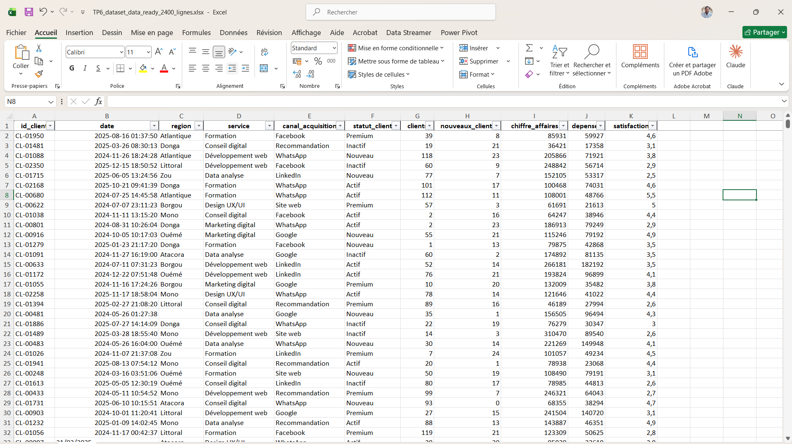
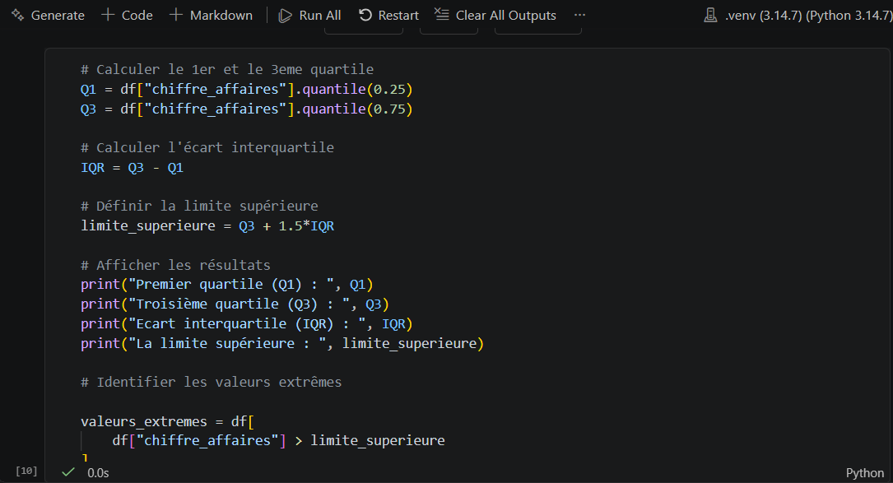
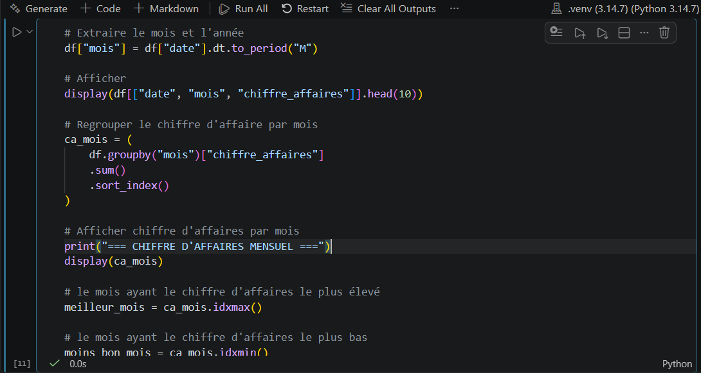
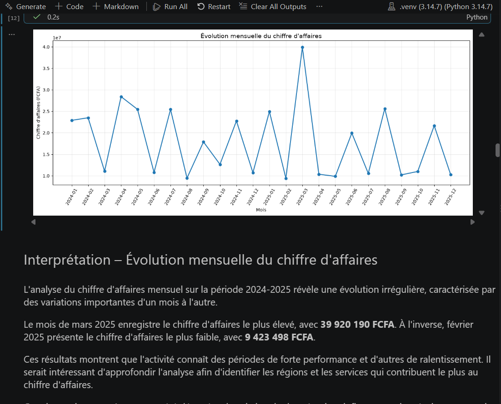
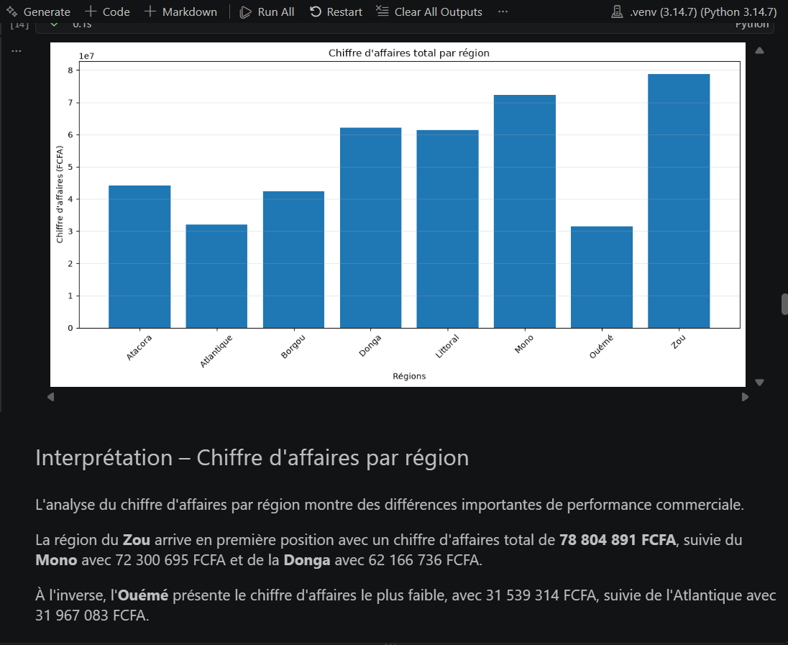
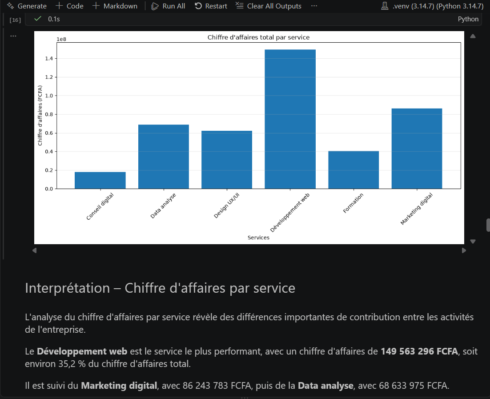
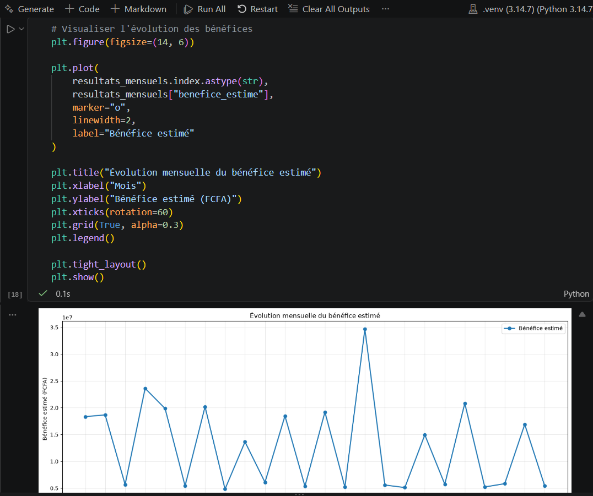
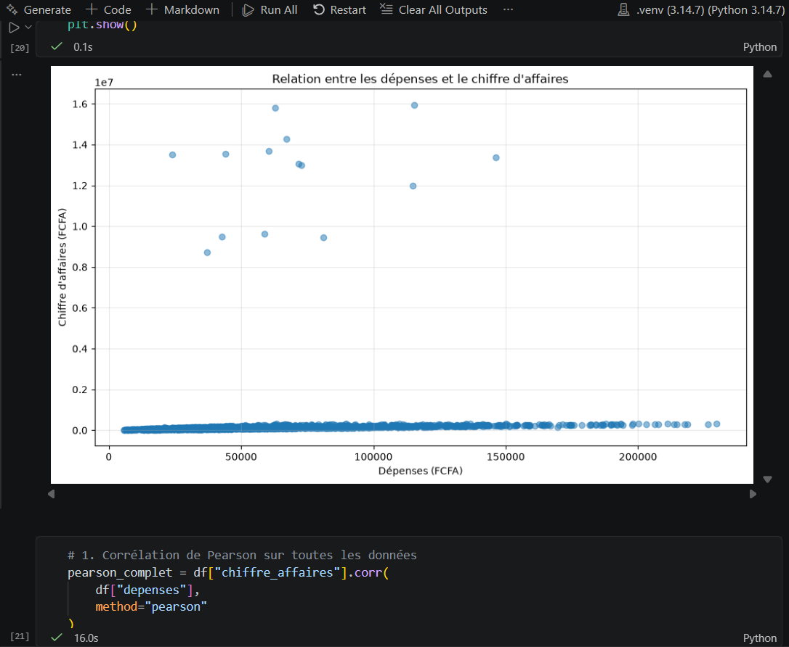
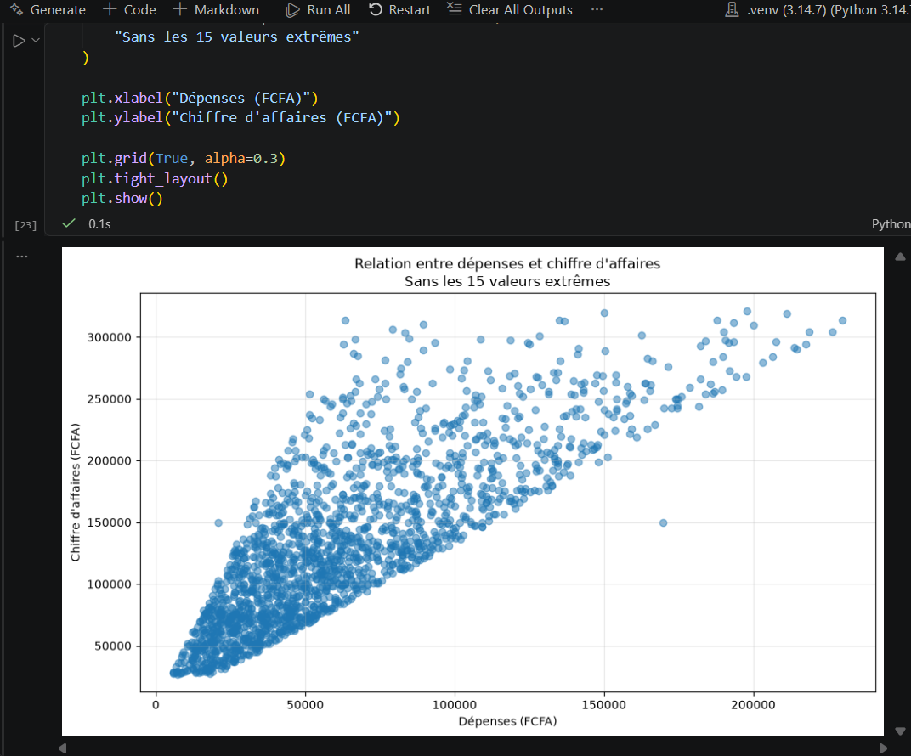

Explorer les données pour comprendre la performance commerciale.
Une démarche d'analyse réalisée avec Python pour inspecter, nettoyer et explorer un jeu de données d'activité commerciale, puis transformer les résultats en observations compréhensibles.
Comprendre la qualité et la structure des données.
Le travail porte sur un jeu de données commercial contenant des informations sur les clients, les dates, les régions, les services, les canaux d'acquisition, le chiffre d'affaires, les dépenses et la satisfaction.
L'objectif était de préparer un dataset exploitable, d'étudier les performances commerciales et financières, puis d'examiner certaines relations statistiques entre les variables.
Questions explorées
- Quelle est l'évolution mensuelle du chiffre d'affaires ?
- Quelles régions et quels services contribuent le plus au chiffre d'affaires ?
- Comment évolue le bénéfice estimé ?
- Quelle relation observe-t-on entre les dépenses et le chiffre d'affaires ?

Contrôler les données avant l'analyse.
Le dataset initial comporte 2 460 lignes et 11 colonnes. Après inspection et application des règles de qualité définies pour l'exercice, 1 908 lignes ont été conservées et 492 lignes ont été rejetées. Les lignes rejetées ont été isolées afin de préserver leur traçabilité.


Lire les performances sous plusieurs angles.
Les agrégations avec Pandas permettent de comparer le chiffre d'affaires dans le temps, selon les régions et selon les services.



Étudier le bénéfice estimé.
Un bénéfice estimé a été calculé comme la différence entre le chiffre d'affaires et les dépenses. Les montants ont ensuite été agrégés par mois afin d'observer leur évolution sur les 24 mois étudiés.

Examiner la relation entre dépenses et chiffre d'affaires.
Le coefficient de corrélation de Pearson calculé sur l'ensemble des observations est de 0,071. L'analyse a ensuite été comparée à une version excluant temporairement les 15 valeurs extrêmes de chiffre d'affaires identifiées avec le seuil IQR. La corrélation de Pearson obtenue sur les 1 893 observations restantes est d'environ 0,809. La corrélation de Spearman sur les données complètes est d'environ 0,815.


Ce que ce projet m'a permis de mettre en pratique.
Compétences mobilisées
- Lecture et inspection de fichiers CSV et Excel.
- Nettoyage et validation avec Pandas.
- Regroupements et agrégations avec
groupby(). - Calcul d'indicateurs financiers simples.
- Visualisation avec Matplotlib.
- Corrélations de Pearson et de Spearman avec SciPy/Pandas.
Enseignements
- La qualité des données conditionne l'interprétation des analyses.
- Les agrégations révèlent des différences temporelles, régionales et par service.
- Les valeurs extrêmes peuvent modifier fortement certains indicateurs statistiques.
- Les résultats doivent être interprétés avec prudence et dans leur contexte.